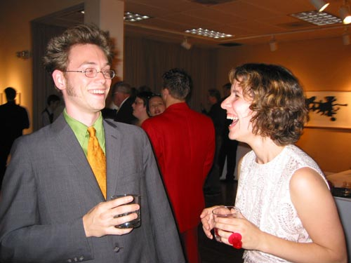

|
Seems every time we go to San Francisco, we make new friends. This time, our finds were Todd and Christy. Christy sent me an email later that said it well: "It's great to have amazing friends who know so many other amazing people--saves us the trouble of having to look for them ourselves. ;) " |